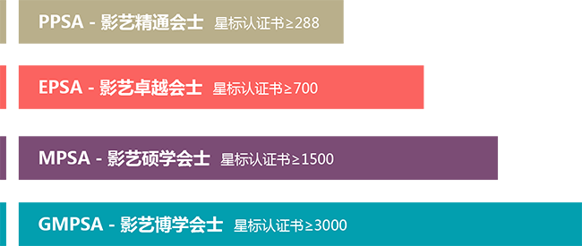

PSA星标名衔
PSA Stars and ROPA
- 美国摄影学会（PSA）1997年推出星标名衔制度，凡有作品参加美国摄影学会认证的国际影赛（展）获奖或获选入展的摄影者，都会收到赛事主办方的成绩邮件，PSA每年也会将每个人的成绩专门记录到PSA专属成绩数据库（EDAS）中，赛事成绩邮件汇总构成每个摄影人的入展总成绩表，经报送美国摄影学会各组别负责人，核对了PSA成绩数据库（EDAS）后，成绩一致的部分就是会员申请星级荣衔的唯一依据。
- 美国摄影学会的星标名衔制度是一个复杂的双系统，简单的说就是：先有星标，再用不同星标的分值累计后换取对应的名衔，这里用图表形式解释星标和名衔如何进阶，以及星标和名衔的对应关系，以期让热爱国际赛事的摄影人一目了然。
星标共分五星、银河10级和钻石10级，它们对应的获奖或入围分值为：
五星星标进阶 · Rank Up to Stars 5
申报五星星标，每个星级要求的作品数和入围数都是成倍数增长的，要求单幅作品平均入围3次（凡在PSA认证的全球摄影赛事中，不论获金、银、铜牌还是入选参展，均记一分）。
参评的人可以一星一星的逐级申请，也可以一次性申请三星、五星。
银河十级星标进阶 · Rank Up to Galaxy 10
不同于五星星标允许所有申报作品平均入围3次，在银河成绩报送的作品中，要求单幅作品至少入围3次（凡在PSA认证的全球摄影赛事中，不论获金、银、铜牌还是入选参展，均记一分）；同时，即便是报送银河1级成绩，也必须在取得五星的星标认证证书后。
完成银河10级的成绩报送，总共需要入围3次的作品超过375幅。
钻石十级星标进阶 · Rank Up to Diamond 10
在银河作品要求单幅入围3次的基础上，钻石的要求加倍了，它要求单幅作品入围至少6次（凡在PSA认证的全球摄影赛事中，不论获金、银、铜牌还是入选参展，均记一分）。同样的，想要申请钻石星标，也必须在获得银河10级的星标认证证书后。
完成钻石10级的成绩报送，总共需要入围6次的作品超过625幅，这基本是一个不可能完成的任务，或者说是沙龙摄影人一辈子的追求。
PSA名衔制度 · PSA ROPA System
取得上述不同组别的星标证书后，即可凭星标证书累计后的分值申请相对应的名衔。美国摄影学会的名衔分PPSA（影艺精通会士）、EPSA（影艺卓越会士）、MPSA（影艺硕学会士）到最高的GMPSA（影艺博学会士）四级。

美国摄影学会规定，用于申报名衔的星标证书，是可以用不同组别的星标积分来累加的。例如，申请影艺卓越会士（EPSA）需要700积分，可以用画意、自然和旅游组三个五星星标证书各288分，总计864分来申请，当然，申请EPSA只需700分即可，所以，上述三个组别中的一个组只要拿4星星标对应的144分来申报即可。
铜、银、金、铂金 · PSA ROPA System
从2015年开始，美国摄影学会在名衔最高的GMPSA上又叠加了铜、银、金、铂金四级，它们相对应的分值分别为：
GRAND MASTER(GMPSA):3000
GRAND MASTER BRONZE (GMPSA/b) 铜牌：5000
GRAND MASTER SILVER (GMPSA/s) 银牌：7000
GRAND MASTER GOLD (GMPSA/g) 金牌：9000
GRAND MASTER PLATINUM (GMPSA/p) 铂金：11000
GRAND MASTER BRONZE (GMPSA/b) 铜牌：5000
GRAND MASTER SILVER (GMPSA/s) 银牌：7000
GRAND MASTER GOLD (GMPSA/g) 金牌：9000
GRAND MASTER PLATINUM (GMPSA/p) 铂金：11000
截止2017年9月，GMPSA铜牌以上获得者全球仅有9人，而尚未有任何一位铂金GMPSA诞生。